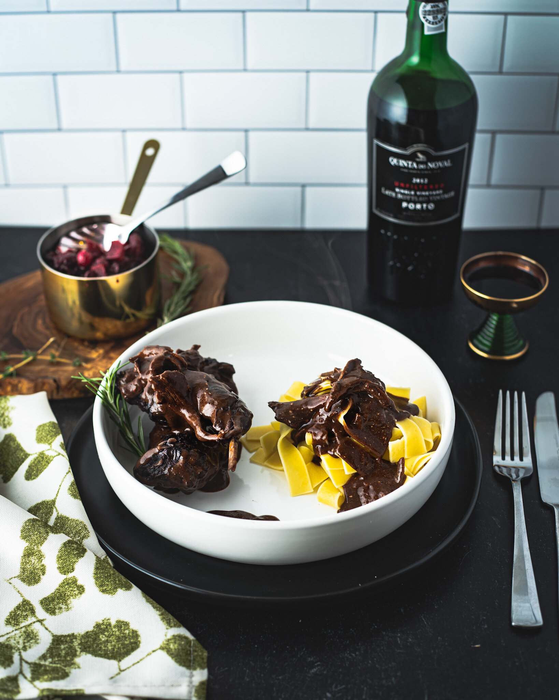

Hasenpfeffer de Savage Hills

A noble and traditional family dish, from field to table.
Description of the dish:
Ingredients
- 1 cottontail rabbit or hare
- large white onion
- 2-3 sprigs of rosemary
- 2-3 sprigs of thyme
- 1 bottle of dry red wine
- etc...
Steps
- Preheat oven to 400 degree Fahrenheit.
- Take rabbit out of the fridge.
- Heat oil in an oven safe pot and add bacon till fat is released. Take out the bacon and put aside. Brown all the rabbit pieces. You might have to do this in stages. Take them out and put them aside. Add the other 1/2 of the onion and the diced carrots and brown. Sprinkle with flour and brown for 3 more minutes. Deglaze with the rest of red wine. Add crushed garlic, bay leave, juniper berries, thyme, rosemary peppercorns, rabbit and bacon.
- Cover pot and roast in the oven for about an hour or till the meat is tender.
- etc...